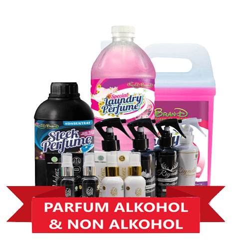
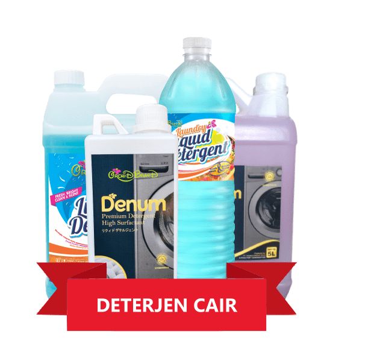
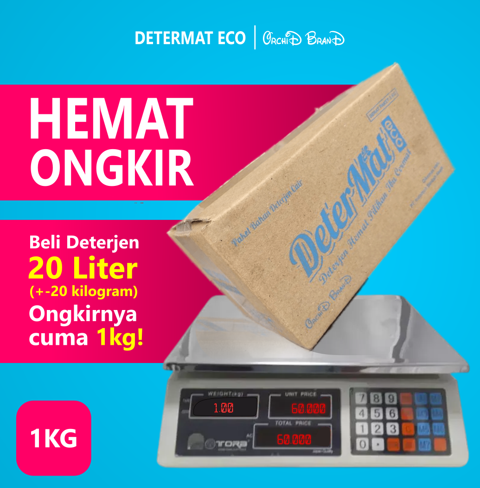
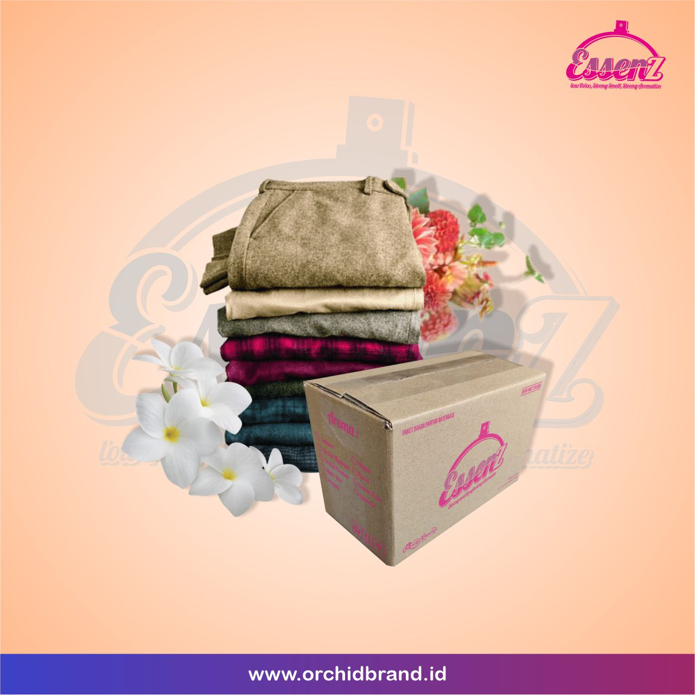
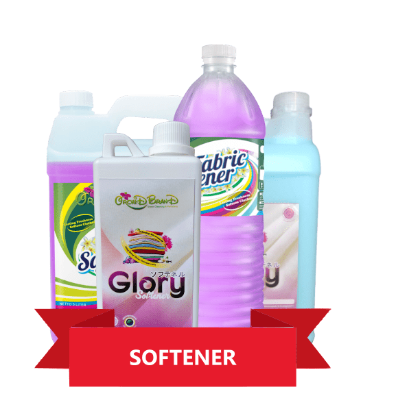
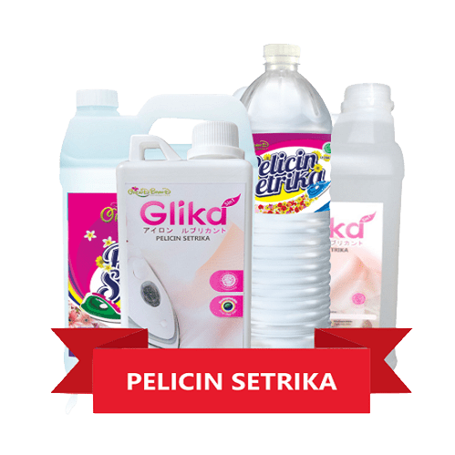
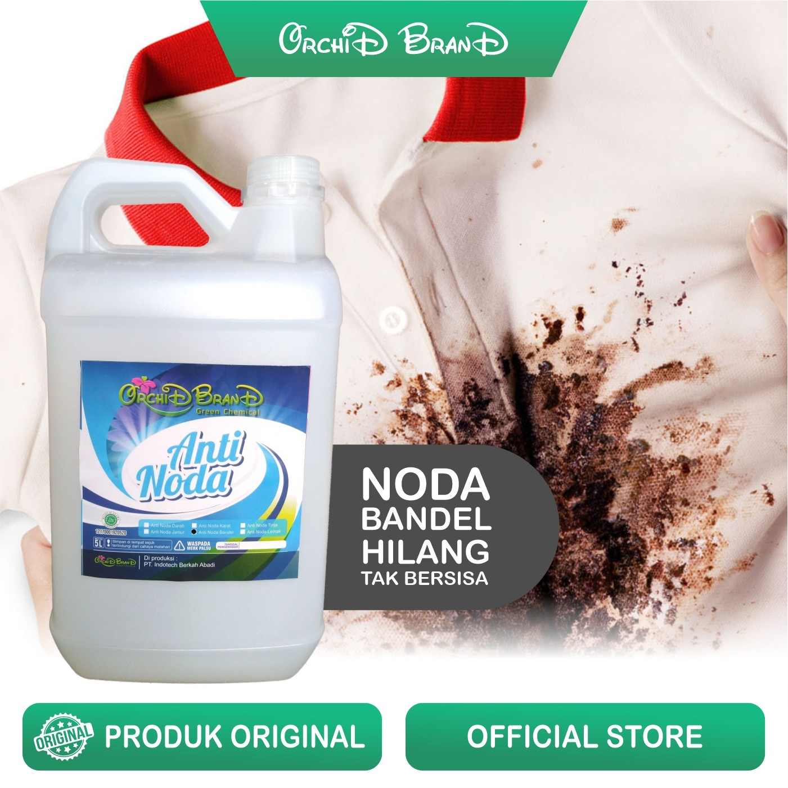
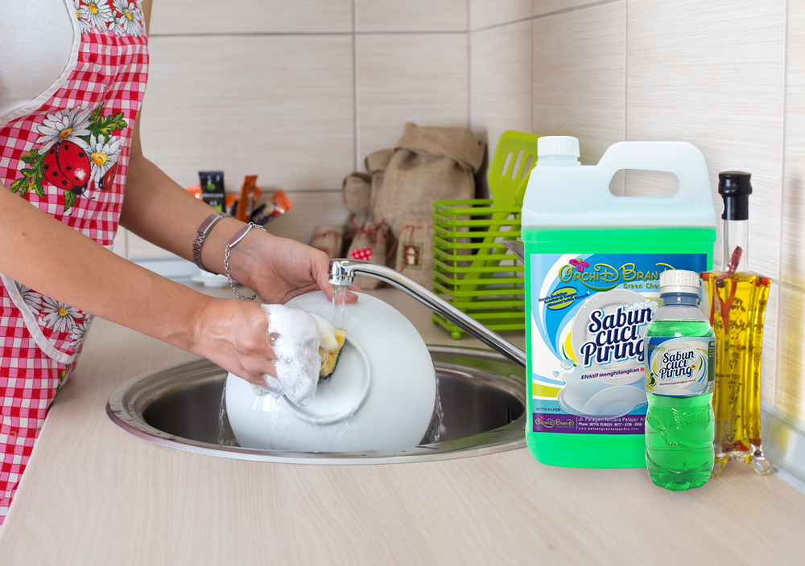
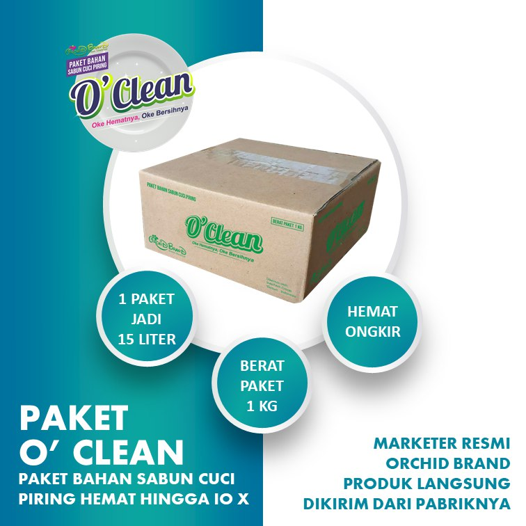
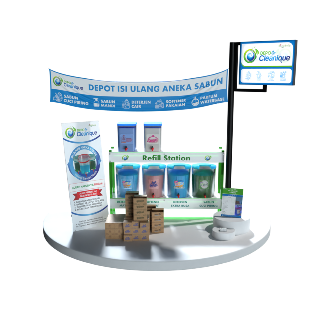

Raihlah Peluang Emas dengan Menjadi Distributor Pewangi Laundry Kiloan
Anda langsung membeli dari kami selaku pabrik produsen pewangi laundry & chemical kebersihan tangan pertama, dan menjadi distributor resmi kami di kota Anda. Tanpa perantara, kualitas teruji laboratorium, dan margin laba maksimal.
Bagaimana Anda bisa meniru kesuksesan agen tersebut? Kuncinya ada pada fakta sederhana: produk pembersih dan pewangi laundry adalah kebutuhan pokok yang tidak pernah berhenti dicari orang setiap hari.
Mengapa Bisnis Chemical Laundry & Pembersih Selalu Ramai?
1 orang dewasa butuh 2–4 potong pakaian/hari, sedangkan anak-anak 5–10 potong/hari. Cucian terus bertambah setiap hari di setiap keluarga.
Jas, gaun pesta, jaket tebal, bedcover, dan boneka membutuhkan deterjen rendah busa dan spotting noda khusus ala binatu profesional.
Pakar menganjurkan cuci sprei & selimut minimal tiap 1–4 minggu, serta gordyn tiap 2–3 bulan sekali. Permintaan chemical selalu berulang (repeat order).
Bisnis laundry kiloan menjamur di setiap sudut kota. Tiap outlet menghabiskan puluhan liter deterjen, softener, dan pewangi setiap minggu!
Rumah sakit, klinik, hotel, restoran, rumah makan, warteg, hingga ribuan rumah tangga di sekitar Anda setiap hari membutuhkan sabun cuci piring, karbol, dan pembersih lantai.
Proses Bisnis Sangat Sederhana:
- ✓ Tidak Perlu Membuat Sendiri: Formula kimia sudah diracik matang dan steril di pabrik kami.
- ✓ Tidak Perlu Simpan Bahan Kimia Mentah: Semua produk datang siap edar dan bersegel rapi.
- ✓ Bisa Merek Sendiri (Maklon): Tim grafis kami bantu desain & cetak label nama brand toko Anda gratis!
- ✓ Pemasaran Online Dibantu: Alamat toko Anda dicantumkan di website kami dan calon pembeli wilayah Anda langsung dialihkan ke WA Anda.
Berapa Potensi Keuntungan Bersih yang Bisa Anda Hasilkan per Bulan?
Berdasarkan studi kasus nyata distributor kami di lapangan yang mampu mencetak omzet 100+ Juta dan profit ± 30 Juta per bulan, Anda bisa mengukur potensi pendapatan di wilayah Anda:
Atur Target Pasokan Harian di Wilayah Anda
Geser slider untuk menyesuaikan estimasi suplai harian ke laundry kiloan langganan, hotel melati, resto, dan rumah tangga.
Galeri Produk Chemical & Pewangi Laundry Kami
Seluruh formulasi diproduksi langsung di pabrik kami di Sleman Yogyakarta dengan standar IFRA, air distilasi TDS 0, dan lolos uji Labkesda:

Parfum Laundry Orchid Brand
Formulasi bibit parfum standar IFRA dengan pelarut murni demineral. Wangi mewah tahan hingga 30 hari dalam kemasan plastik laundry, tidak meninggalkan bercak pada pakaian.

DETERMAT Liquid Detergent
Deterjen cair rendah busa khusus mesin cuci bukaan depan (front loading) dan atas. Daya bersih tinggi, tidak meninggalkan kerak pada selang mesin dan ramah serat kain.

DETERMAT ECO (Paket Konsentrat)
Inovasi paket biang deterjen 1 Kg menghasilkan 20 Liter deterjen siap pakai. Solusi paling hemat biaya kirim kargo untuk mitra luar pulau Jawa dengan kualitas teruji Labkesda.

ESSENZ & O'CLEAN Detergent
Deterjen konsentrat tinggi dengan formula pelepasan kotoran aktif untuk pakaian kerja berat, seragam bernoda minyak, dan linen hotel berbintang.

SOFTSENSE Fabric Softener
Formula pelembut pakaian yang melembutkan serat kain hingga ke pori-pori terdalam, mereduksi listrik statis, dan memudahkan proses setrika agar pakaian licin sempurna.

Pelicin & Pewangi Setrika Glika
Cairan pelicin setrika membuat pakaian licin seketika, mencegah kain gosong atau mengkilap akibat panas setrika, dan mengunci semerbak keharuman segar sepanjang hari.

Varian Kimia Anti Noda Bandel
Formula spotting spesifik untuk noda darah, karat, tinta bolpoin, jamur titik hitam, noda minyak, dan noda kuning kerah baju tanpa merusak warna dasar kain.

Sabun Cuci Piring CUPIR Jeruk Nipis
Formula kesat seketika penghilang lemak membandel dan bau amis pada perabotan makan dan dapur. Busa melimpah, food grade, lembut di tangan, dan sangat hemat.

Paket Bahan Sabun O'Clean (1kg Jadi 15L)
Paket biang sabun cuci piring konsentrat 1 Kg. Tinggal campur air di rumah/toko Anda, menghasilkan 15 Liter sabun kental berbusa melimpah siap pakai atau siap repack.
8 Keunggulan Mutu Kimia Pembersih Orchid Brand Green Cleaning
Mengapa chemical laundry racikan pabrik kami memiliki repeat order tinggi di kalangan pengusaha binatu profesional:
Produk Industri Lokal, Kualitas Internasional
Bangga berproduk lokal. OrchiD BranD adalah hasil peracikan dan pengolahan langsung dari tangan ahli dengan pengerjaan cermat, dapat dipertanggungjawabkan, dan bebas dari bahan berbahaya. Keaslian produk dijamin dengan kemasan baru, steril, dan bersegel.
Sertifikasi IFRA (International Fragrance Association)
OrchiD BranD menggunakan bahan baku pewangi yang telah mendapatkan sertifikasi internasional dari IFRA (International Fragrance Association — ifra.org) dari Swiss demi menjamin parfum bermutu tinggi, bebas karsinogen, dan aman untuk kulit sensitif.
Teknologi Color Arrest Pelindung Serat
Teknologi color arrest mampu menjaga warna pakaian pelanggan agar tidak pudar saat dicuci berkali-kali, dan bahkan membuat warna serat kain tampak lebih cemerlang dan tampak seperti pakaian baru.
Pilihan Variasi Aroma Original Pabrik
Dengan menggunakan bibit parfum original, OrchiD BranD mampu menghadirkan variasi aroma berlimpah, mulai dari aroma konvensional (Snappy, Sakura, Ocean Fresh) hingga aroma original mewah dari produsen parfum terkemuka dunia.
Aroma Konsisten & Tahan Lama (Anti Bau Tabrakan)
Salah satu rahasia agar hasil cucian memiliki wangi maksimal adalah menggunakan 1 jenis karakter parfum di seluruh tahapan pencucian: deterjen, softener, dan pewangi. Aroma OrchiD BranD wangi konsisten tahan lama tanpa bau menyengat.
Campuran Murni Air Distilasi H2O (TDS = 0)
Air yang digunakan dalam pencampuran chemical pada proses produksi adalah air distilasi murni (H2O) tanpa kandungan mineral dan bakteri sedikitpun (diukur dengan TDS meter = 0). Hasil cucian dijamin tidak berbau apek meski disimpan berbulan-bulan.
Pilihan Chemical Khusus Noda Membandel
Tidak terbatas untuk pencucian biasa, OrchiD BranD juga menyediakan rangkaian formula spotting noda spesifik yang ampuh: noda darah, noda tinta, noda minyak, noda karat, noda jamur, hingga kerak kuning kerah baju.
Aman & Ramah Lingkungan (Green Solvent)
Dengan konsep ramah lingkungan, OrchiD BranD tidak menggunakan solvent PCE yang bersifat keras dan dapat merusak fabric saat dry cleaning. Melalui Green Solvent, pakaian lebih awet, tidak merusak mesin cuci, dan ramah bagi ekosistem pembuangan.
Tentukan Tipe Keagenan Sesuai dengan Minat & Kapasitas Anda
Silahkan pilih model bisnis yang paling sesuai untuk Anda. Semua paket langsung mendapatkan produk siap edar dari pabrik dengan margin optimal:
Agen Lepas / Jual Curah
Bisa Jual Curah atau Memakai Merek / Brand Anda Sendiri (Private Label / Maklon).
- Dapat Produk Jerigenan / Curah Siap Pakai atau Siap Repacking
- Fasilitas Bikin Merek Sendiri (Private Label / Maklon)
- Bebas Jual Tanpa Target Minimum Bulanan
- Tersedia Opsi Biang Sabun Konsentrat 1 Kg (Hemat Kargo Luar Jawa)
Agen Resmi Orchid Brand
Untuk Segmen Laundry Kiloan Profesional dan Kebutuhan Pembersih Rumah Tangga.
- Paket Komplit: Parfum Laundry, Deterjen, Softener, Pelicin, & Anti Noda
- Hak Menggunakan Merek Resmi Orchid Brand Green Cleaning
- Diberikan Banner / Spanduk Agen Resmi Ukuran 2 x 1 Meter
- Pencantuman Alamat Toko di Website peluangusahalaundry.com
- Harga Grosir Khusus VIP untuk Seluruh Repeat Order Selanjutnya
Master Lisensi Orchid Brand
Hak Distribusi Utama Eksklusif Kota / Kabupaten dengan Skala Kargo & Pergudangan.
- Stok Komprehensif Skala Tonase / Drum & Jerigen Khusus Gudang
- Proteksi Wilayah Eksklusif: Semua Order dari Kota Anda Dialihkan ke Anda
- Dukungan Iklan Digital (Google & Meta) Langsung ke Wilayah Anda
- Fasilitas Pendampingan Teknis, Sertifikasi, & Maklon Prioritas
Didukung Penuh oleh Jaringan Manufaktur Kimia Terpercaya
PT Indotech Berkah Abadi mengintegrasikan ekosistem riset kimia modern, pabrikasi mandiri, pelatihan formulasi, dan jaringan distribusi nasional:
Orchid Brand
Pabrik manufaktur kimia tangan pertama di Sleman DIY. Lisensi IFRA internasional dan air murni TDS 0.
Cleanique Lab
Pusat R&D formulasi kebersihan inovatif untuk segmen laundry profesional, rumah sakit, hotel, dan industri.
Cleanique Mart
Hub kemitraan dan peluang bisnis kimia kebersihan dengan proyeksi omzet 50+ Juta/bulan bagi mitra agen.
Cleanique Academy
Pusat pelatihan teknis formulasi kimia sabun mandiri, standar SOP binatu, dan sertifikasi teknisi laundry.
Depo Cleanique
Jaringan waralaba depo isi ulang (refill) sabun laundry dan rumah tangga berbasis green economy.
Peluang Bisnis Outlet Isi Ulang Sabun "DEPO CLEANIQUE"
Tingkatkan skala bisnis Anda dari agen rumahan menjadi pemilik Depot Isi Ulang Aneka Sabun resmi di kota Anda. Konsep refill station modern: hemat sampah plastik, harga curah terjangkau, dan margin laba mitra sangat tinggi.
- ✓ Dilengkapi Booth Refill Station higienis 4–6 kran dispending
- ✓ Media promosi spanduk, banner, dan standing banner siap pasang
- ✓ Dukungan pasokan chemical jerigen & drum harga grosir langsung dari pabrik

Apa Kata Rekan Pengusaha yang Telah Bermitra dengan Pabrik Kami?
Ratusan mitra di Jawa, Sumatera, Kalimantan, Sulawesi, hingga Papua telah membuktikan stabilitas mutu cairan kimia dan kecepatan perputaran omzet harian:
“Awalnya hanya coba paket 5 jerigen untuk pemakaian outlet laundry saya sendiri. Pelanggan langsung memuji wanginya yang awet sampai 3 minggu di lemari. Akhirnya tetangga binatu lain ikut kulakan ke saya, sekarang sebulan order 90 jerigen rutin langsung dari pabrik Sleman!”
“Inovasi biang deterjen konsentrat 1kg jadi 15 liter sangat memotong ongkos kargo kapal ke Kalimantan! Margin keuntungan bersih saya bisa tembus 45%. Pelanggan setia repeat order karena busanya pas dan tidak menyumbat selang mesin front loading.”
“Tim Indotech luar biasa suportif. Saya dibantu buatkan formulasi khusus aroma dan desain stiker label sendiri (maklon). Sekarang suplai 25+ outlet laundry kiloan tiap pekan lancar jaya tanpa pernah ada kendala keterlambatan stok.”
Pertanyaan yang Paling Sering Diajukan Calon Mitra
Punya pertanyaan seputar teknis pengiriman antar-pulau, formulasi chemical, atau sistem maklon merek sendiri? Temukan jawabannya di sini:
Sama sekali tidak wajib! Mayoritas mitra kami memulai bisnis ini dari rumah dengan memanfaatkan garasi atau ruang depan. Anda bisa langsung memasok puluhan outlet binatu kiloan di sekitar kecamatan Anda, memasarkan via WhatsApp group komplek, Instagram, Facebook Marketplace, atau supply ke hotel dan salon lokal.
Kami memiliki dua solusi unggulan: Pertama, kami bekerja sama dengan ekspedisi kargo rekanan bertarif grosir (Indah Cargo, Dakota, KALOG, Baraka, TAM). Kedua, kami menyediakan Biang Sabun Konsentrat Formula 1 Kg yang bisa Anda cairkan sendiri menjadi 15 Liter siap pakai. Ini menghemat biaya ekspedisi hingga 85% untuk mitra di Luar Jawa!
Tentu saja bisa! Melalui fasilitas Maklon PT Indotech Berkah Abadi, kami memfasilitasi pembuatan sabun laundry, pelicin, dan pewangi dengan label brand Anda sendiri. Tim grafis kami akan membantu merancang stiker kemasan profesional lengkap dengan kode batch dan nomor legalitas resmi.
Parfum laundry kami diproduksi menggunakan bibit parfum grade murni standar IFRA dengan pelarut khusus tanpa air distilasi biasa. Pada pakaian yang disetrika dan disimpan dalam plastik laundry tertutup rapat, aromanya terbukti bertahan harum mewah antara 14 hingga 30 hari.
TIDAK ADA royalti fee, biaya tahunan, maupun potongan persentase omzet. Kemitraan kami adalah jual-beli putus murni. Anda membeli stok dengan harga tangan pertama pabrik termurah, dan 100% laba hasil penjualan adalah milik Anda seutuhnya.